Fun with Filters and Frequencies
Building intuition for 2D convolution and finite-difference edge detection, then using frequency-domain ideas for sharpening, hybrid images, and multiresolution blending.
Part 1: Filters and Edges
1.1 Convolution from scratch
I implemented 2D convolution from scratch using NumPy in two ways: a
four-loop implementation and a more efficient
two-loop implementation. Both implementations use zero padding
for 'same' and 'full' modes and explicitly flip the
kernel, as required for true convolution rather than cross-correlation.
Padding and four-loop convolution
First, I implemented zero padding using np.pad. For
'same' mode, the padding is chosen such that the output has the
same spatial dimensions as the input (with the usual centered alignment).
For 'full' mode, the image is padded by kernel_size - 1
on each side.
def pad_image(image: np.ndarray, kh: int, kw: int,
mode: str = "same") -> np.ndarray:
if mode == "full":
pad_top = pad_bottom = kh - 1
pad_left = pad_right = kw - 1
elif mode == "same":
pad_bottom = (kh - 1) // 2
pad_top = (kh - 1) - pad_bottom
pad_right = (kw - 1) // 2
pad_left = (kw - 1) - pad_right
else:
raise ValueError(
f"mode must be 'same' or 'full', got {mode!r}"
)
return np.pad(
image,
pad_width=((pad_top, pad_bottom),
(pad_left, pad_right)),
mode="constant",
constant_values=0.0,
)
def convolve2d_4loop(image: np.ndarray,
kernel: np.ndarray,
mode: str = "same") -> np.ndarray:
kh, kw = kernel.shape
# Flip the kernel for true convolution instead of cross-correlation
flipped_kernel = kernel[::-1, ::-1]
padded = pad_image(image, kh, kw, mode)
H_out = padded.shape[0] - kh + 1
W_out = padded.shape[1] - kw + 1
out = np.zeros((H_out, W_out), dtype=np.float64)
for i in range(H_out):
for j in range(W_out):
acc = 0.0
for ki in range(kh):
for kj in range(kw):
acc += (
padded[i + ki, j + kj]
* flipped_kernel[ki, kj]
)
out[i, j] = acc
return outThe four loops iterate over the output row, output column, kernel row, and kernel column. At each output location, the corresponding image patch is multiplied element-by-element with the flipped kernel and summed.
Two-loop convolution
I then reduced the implementation to two Python loops. The inner two
kernel loops are replaced by a NumPy element-wise multiplication followed
by np.sum. This performs the same computation while reducing loop overhead.
def convolve2d_2loop(image: np.ndarray,
kernel: np.ndarray,
mode: str = "same") -> np.ndarray:
kh, kw = kernel.shape
flipped_kernel = kernel[::-1, ::-1]
padded = pad_image(image, kh, kw, mode)
H_out = padded.shape[0] - kh + 1
W_out = padded.shape[1] - kw + 1
out = np.zeros((H_out, W_out), dtype=np.float64)
for i in range(H_out):
for j in range(W_out):
patch = padded[i:i + kh, j:j + kw]
out[i, j] = np.sum(patch * flipped_kernel)
return outComparison with scipy.signal.convolve2d
I compared both implementations against
scipy.signal.convolve2d using random images and both odd
(3×5) and even (4×6) kernels. I tested both 'same'
and 'full' modes with zero-filled boundaries. For even kernels,
only the two-loop implementation was tested, since the four-loop version is
slower and less efficient due to the lack of a single center pixel, making
centering/padding ambiguous.
def _check(name, a, b, atol=1e-8):
ok = np.allclose(a, b, atol=atol)
status = "PASS" if ok else "FAIL"
print(
f"[{status}] {name} "
f"shapes={a.shape} vs {b.shape} "
f"max_abs_err={np.max(np.abs(a - b)):.3e}"
)
assert ok, f"Mismatch in {name}"
test_img = RNG.random((20, 17))
odd_kernel = RNG.random((3, 5))
even_kernel = RNG.random((4, 6))
for mode in ("same", "full"):
ref = scipy_convolve2d(
test_img,
odd_kernel,
mode=mode,
boundary="fill",
fillvalue=0
)
out4 = convolve2d_4loop(
test_img, odd_kernel, mode=mode
)
out2 = convolve2d_2loop(
test_img, odd_kernel, mode=mode
)
_check("4-loop vs SciPy", out4, ref)
_check("2-loop vs SciPy", out2, ref)
for mode in ("same", "full"):
ref = scipy_convolve2d(
test_img,
even_kernel,
mode=mode,
boundary="fill",
fillvalue=0
)
out2 = convolve2d_2loop(
test_img, even_kernel, mode=mode
)
_check("2-loop vs SciPy (even kernel)", out2, ref)
All tested outputs matched scipy.signal.convolve2d to numerical
precision, with the same output shapes and a maximum absolute error of about
2×10−15.
9×9 box filter
Next, I converted my image to grayscale and applied a 9×9 box filter.
Each element of the filter has value 1/81, so the output at each
pixel is the average of the surrounding 9×9 neighborhood.
# Convert the image to grayscale first
image_1_1_gray = cv2.cvtColor(
image_1_1.astype(np.float32),
cv2.COLOR_RGB2GRAY
)
# 9x9 box (mean) filter
box_filter_9x9 = (
np.ones((9, 9), dtype=np.float64) / 81.0
)
# Convolve using the implementation from scratch
box_2loop = convolve2d_2loop(
image_1_1_gray,
box_filter_9x9,
mode="same"
)
# Reference result from SciPy
box_scipy = scipy_convolve2d(
image_1_1_gray,
box_filter_9x9,
mode="same",
boundary="fill",
fillvalue=0
)
assert np.allclose(box_2loop, box_scipy)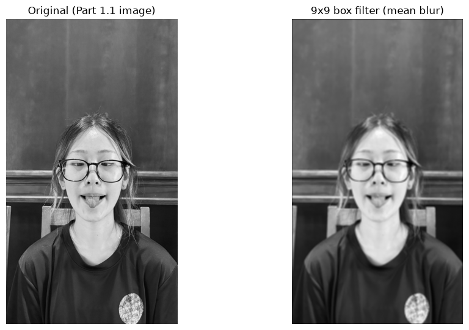
Finite difference filters
Finally, I applied the finite difference operators
Dx = [1 0 -1] and
Dy = DxT.
These filters approximate horizontal and vertical intensity changes,
highlighting edges in the image.
D_x = np.array([[1.0, 0.0, -1.0]])
D_y = np.array([[1.0], [0.0], [-1.0]])
# Apply the filters using the convolution implementation
Ix = convolve2d_2loop(
image_1_1_gray,
D_x,
mode="same",
boundary="fill",
fillvalue=0
)
Iy = convolve2d_2loop(
image_1_1_gray,
D_y,
mode="same",
boundary="fill",
fillvalue=0
)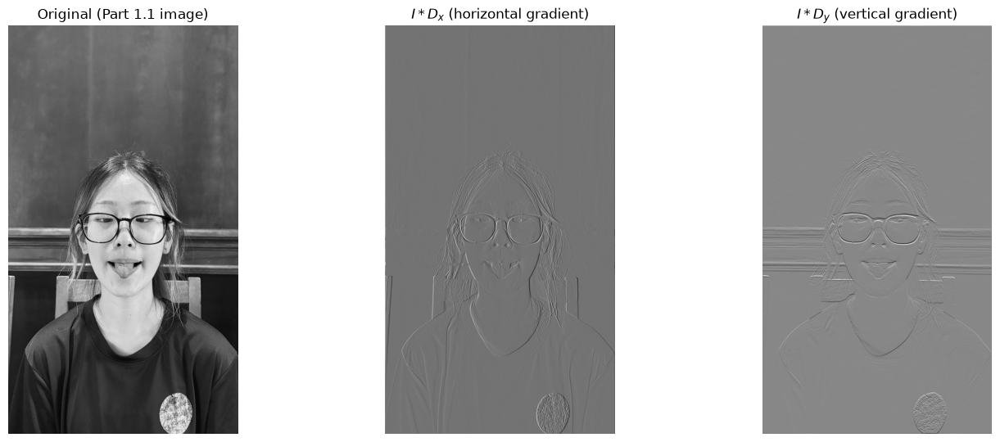
Runtime comparison
| Implementation | Time | vs. SciPy |
|---|---|---|
| 4 loops (pure Python) | 38.06 s | ~207× slower |
| 2 loops (NumPy inner sum) | 5.00 s | ~27× slower |
scipy.signal.convolve2d |
0.18 s | 1× |
Runtime The four-loop implementation performs the kernel multiplication and accumulation entirely in Python, resulting in substantial interpreter overhead. The two-loop implementation moves the inner kernel computation into NumPy, making it about 7.6× faster in this experiment. SciPy is faster still because its convolution implementation is optimized and does not require Python-level loops over the image.
Boundaries
All three implementations use zero padding, matching SciPy's
boundary="fill", fillvalue=0. Near the image boundary, part of
the kernel therefore overlaps with artificial zero-valued pixels. For the
box filter, this can make the boundary appear slightly darker. For the
finite-difference filters, the transition between the real image and the
zero padding can also produce an artificial edge along the image frame.
Using reflected or replicated padding would reduce these boundary effects.
1.2 Finite-difference gradients and edges
Convolving the cameraman image with Dx and Dy gives the partial derivatives; the gradient magnitude is \(\sqrt{I_x^2+I_y^2}\). I binarized it by trying several thresholds and judging by eye.
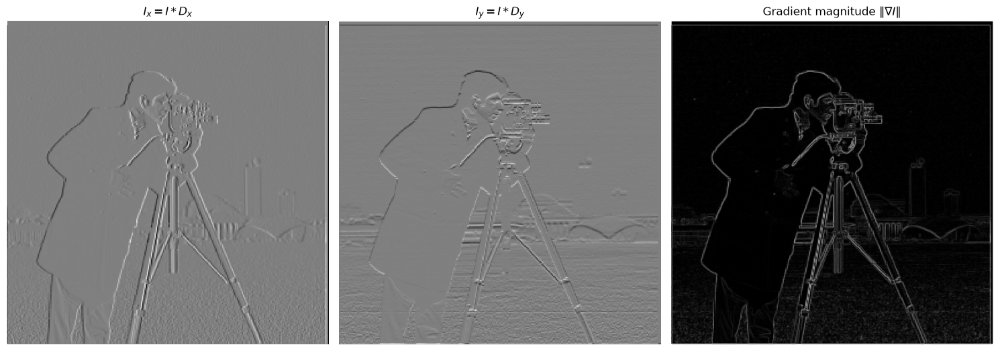
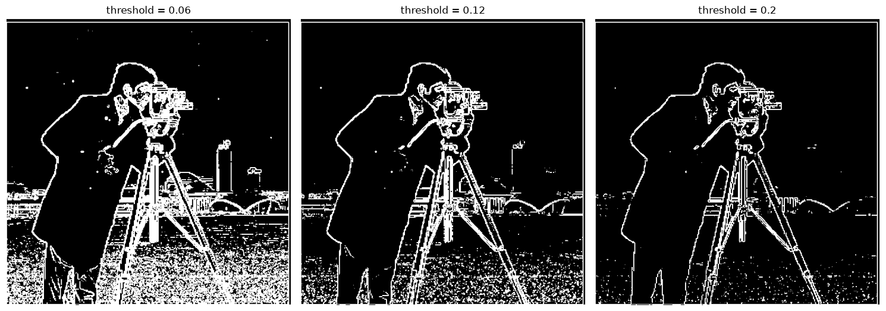
Choice and justification: τ = 0.12. At 0.06 the grass and sky fill with speckle; at 0.20 faint but real edges (background buildings, soft shadows) vanish. 0.12 keeps the figure, camera and tripod contours while removing most isolated noise pixels, though the textured grass still leaks some.
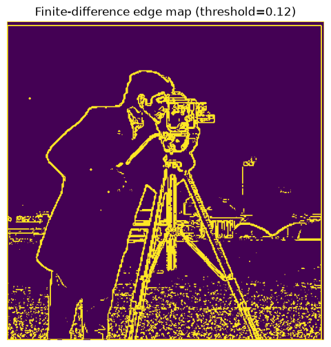
1.3 Gaussian smoothing and Derivative-of-Gaussian
The finite-difference result is noisy because a derivative amplifies high frequencies. I built a 9×9 Gaussian (σ = 2) as the outer product of two
cv2.getGaussianKernel vectors, blurred first, then repeated the gradient pipeline (re-tuned to τ = 0.05, since blurring lowers gradient amplitude).
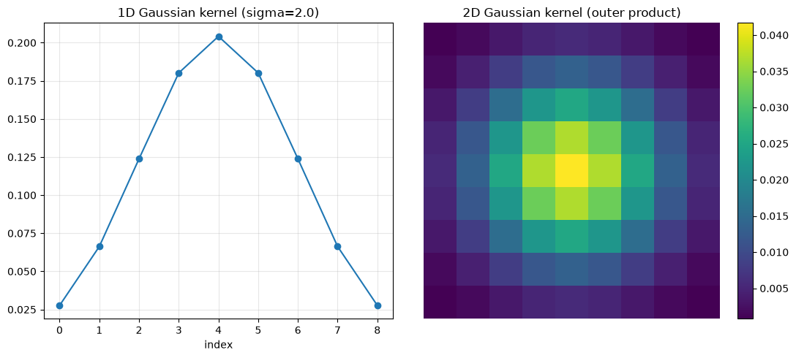
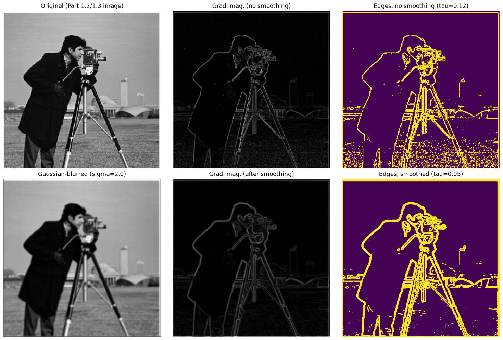
Differences. Smoothing removes the salt-and-pepper responses in the grass and sky, and the surviving edges are continuous and closed. The cost is localization: edges become thicker and slightly less precise (the usual detection vs. localization trade-off of σ). The yellow frame in the smoothed map is a zero-padding artifact since blurring against a black border creates a real intensity step at the image edge.
DoG filters. Because convolution is associative, \(\partial_x(G*I)=(G*D_x)*I\), so I pre-convolved G with Dx and Dy
(mode='full', giving 9×11 and 11×9 kernels) and applied each in one pass.
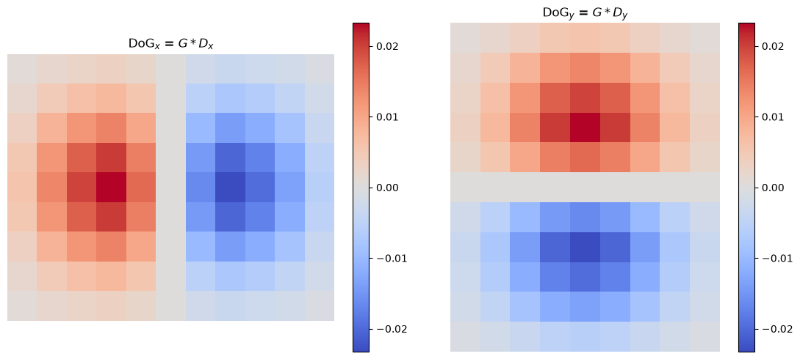
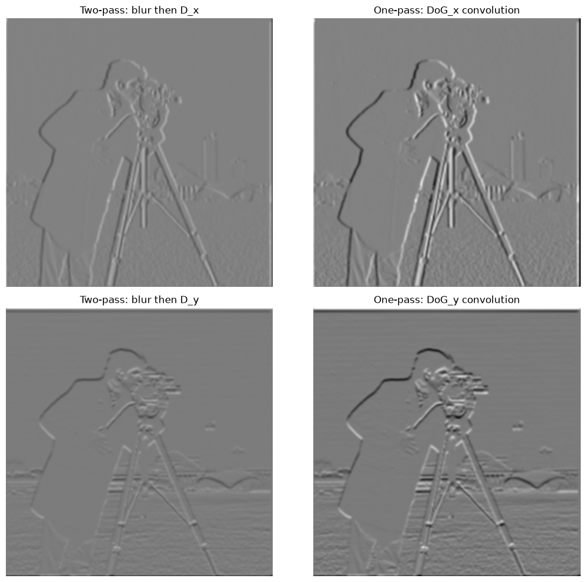
Verification. The two pipelines agree to ~7×10−16. Over the full array the maximum difference is 0.40, all inside a border strip about one kernel wide, because the two-pass version zero-pads twice and the DoG version once. The display contrast differs only because of that border.
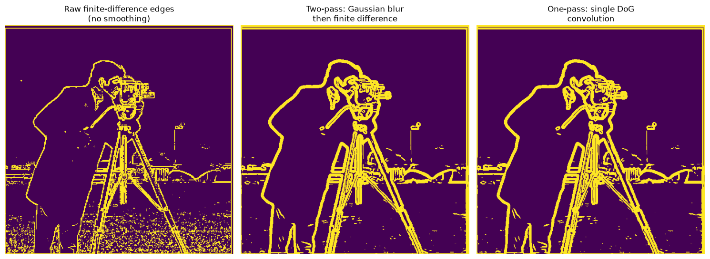
Part 2: Frequencies and Multiresolution
2.1 Unsharp mask
Blurring an image with a Gaussian G is a low-pass filter: it averages neighboring pixels, which smooths out rapid intensity changes (edges, fine texture) and keeps the slowly varying parts. So the blur \(I*G\) is the image with its high frequencies removed. Subtracting it from the original leaves exactly what the blur took away, \(I - I*G\), a high-pass version containing only edges and fine detail. An image looks sharp when its edges have high contrast, i.e. when this high-frequency content is strong, so we add a scaled copy of it back to the original:
\[ I_{sharp}=I+\alpha(I-I*G_\sigma)=I*\big[(1+\alpha)\,\delta-\alpha\,G_\sigma\big] \]In the frequency domain the filter's response is \(H(\omega) = 1+\alpha\,(1-\hat G_\sigma(\omega))\). The Gaussian passes low frequencies (\(\hat G \approx 1\) near DC) and suppresses high ones (\(\hat G \to 0\)), so the gain is 1 at low frequencies (overall brightness and smooth regions are unchanged) and rises to \(1+\alpha\) at high frequencies. The kernel weights sum to \((1+\alpha)-\alpha = 1\), which is why average brightness is preserved. σ sets the cutoff, since it decides which frequencies count as "detail". A small σ boosts only very fine detail, and a large σ boosts coarser structure too. The bracket is the unsharp mask filter, a single kernel: a boosted center pixel minus a Gaussian-weighted local average. α = 0 is the identity. I checked that the two-step and single-kernel versions agree to ~3×10−15.
def build_unsharp_kernel(ksize, sigma, alpha):
g = cv2.getGaussianKernel(ksize, sigma); G = g @ g.T
delta = np.zeros_like(G); delta[ksize//2, ksize//2] = 1.0
return (1 + alpha) * delta - alpha * G # = I + a*(I - I*G)The method is called "unsharp" masking because the mask is built from a blurred (unsharp) copy of the image. Sharpening is therefore the opposite of blurring, but it is built from a blur: the blur tells us which frequencies are "low", and everything else is the detail we amplify.
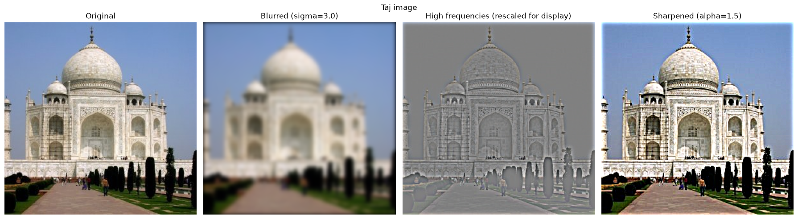
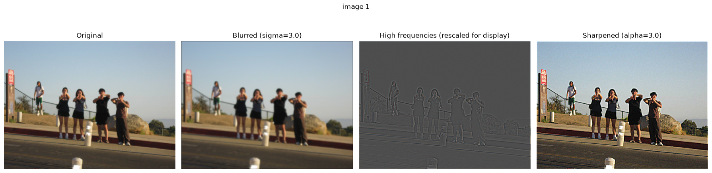
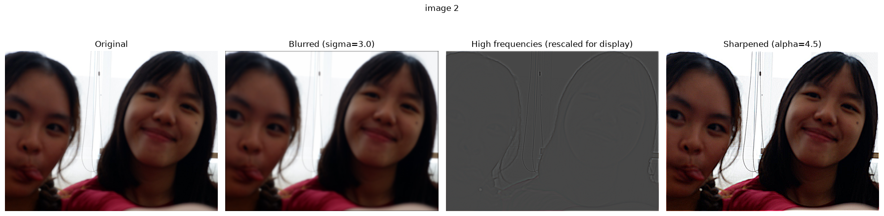
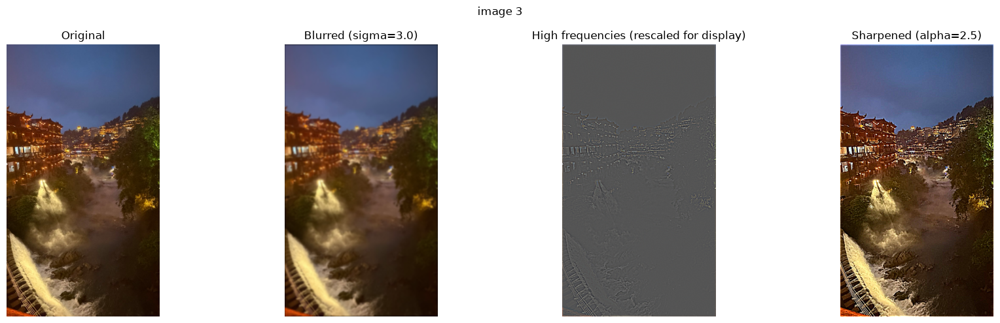
Varying the sharpening amount
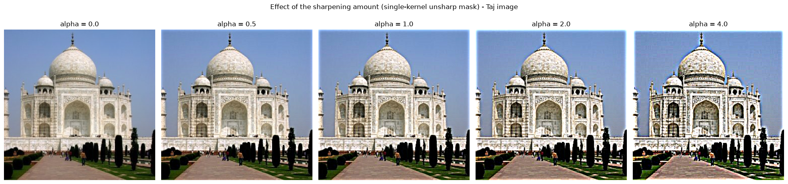
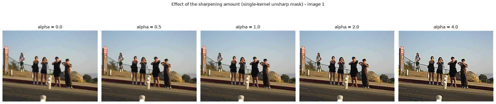
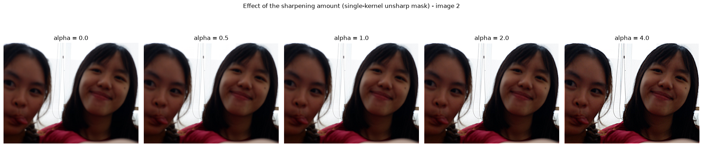
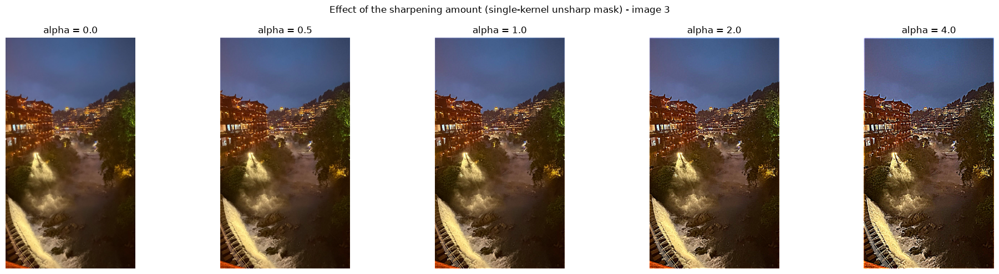
Edges and fine texture strengthen steadily as α grows. At the high end of the sweep (α = 2–4 on the Taj Mahal), bright and dark halos appear around strong edges (ringing) and noise is amplified along with detail.
Unsharp masking doesn't recover information. It amplifies the contrast of high frequencies that are still present, which is why it looks sharper. On an image that was blurred first, the fine detail is largely gone and boosting the remainder mostly produces noise and halos.
Evaluation: blur a sharp image, then sharpen it
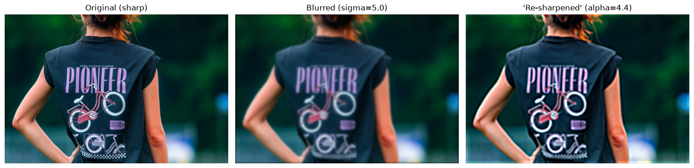
Observations. The re-sharpened image looks much crisper: the lettering and bicycle outlines regain contrast. But it is not the original: PSNR against it goes from 23.21 dB (blurred) to only 23.60 dB. Blurring discards frequencies above the cutoff, so unsharp masking can only boost what faint high-frequency residue survives; it cannot restore lost detail, and it amplifies noise and adds halos. Recovering the original would need deconvolution, not sharpening.
2.2 Hybrid images
Following Oliva et al., each hybrid is the high-pass of one image (\(I_1 - I_1*G_{\sigma_1}\)) plus the low-pass of another (\(I_2*G_{\sigma_2}\)), after aligning the pair by two hand-picked landmarks (rotate, scale, translate, crop). Up close you see the high-frequency image; from far away, or shrunk, you see the low-frequency one.
Full process for one pair
(This is one of the pictures where people say Ariana and Cynthia look the same.)
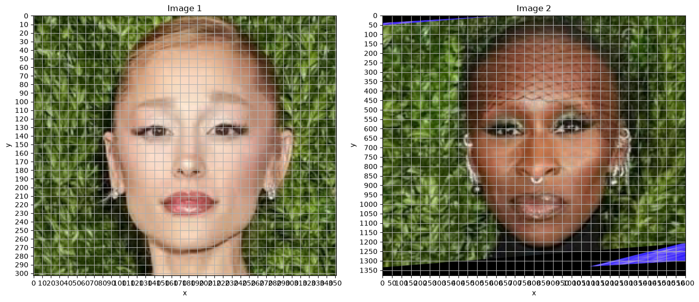
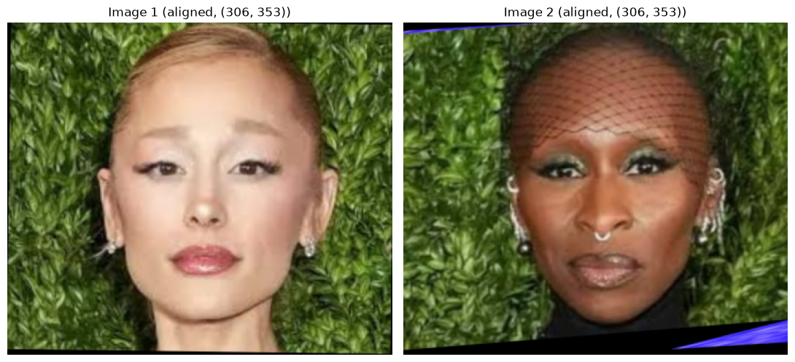
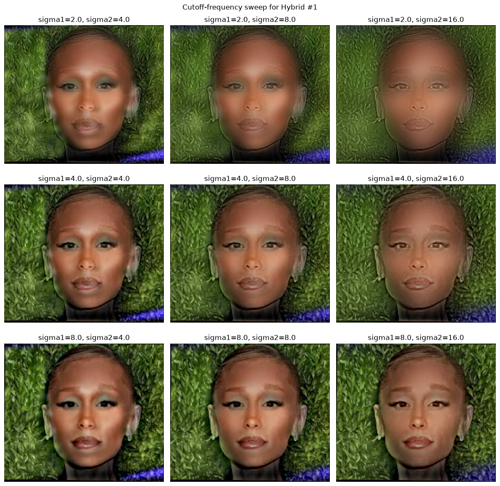
Cutoff choice. Small σ1 keeps only very fine detail (it vanishes from a distance), while large σ2 blurs the low-pass image until its identity is lost. I chose σ1 = 4 for the high-pass image and σ2 = 6 for the low-pass image: this pair gave the best balance in the sweep between the two identities. With a Gaussian, the cutoff (where gain falls to ~0.5) is at about fc ≈ 0.19/σ cycles per pixel.

Fourier analysis. The low-passed image’s spectrum is visibly confined to a small region around the center (DC), with everything outside dark. The high-passed image keeps its energy in the outer, high-frequency region. The hybrid’s spectrum combines the two: low frequencies from image 2, high frequencies from image 1.
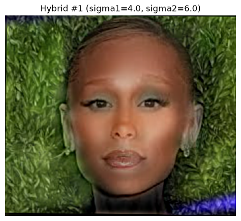
More hybrids
Hybrid 2, showing Ariana and Cynthia in another instance
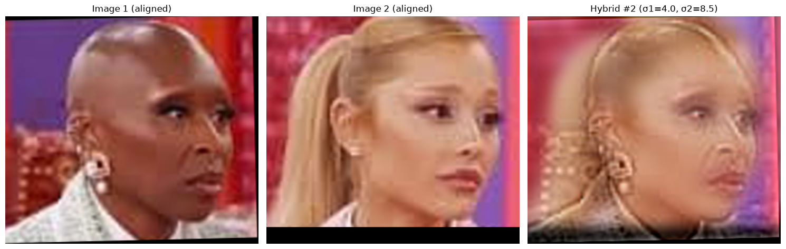
Hybrid 3, showing Oli London and BTS member
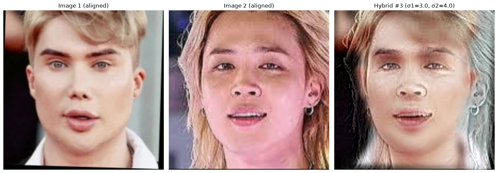
Hybrid 4, showing the hamster meme and a random guy from TikTok
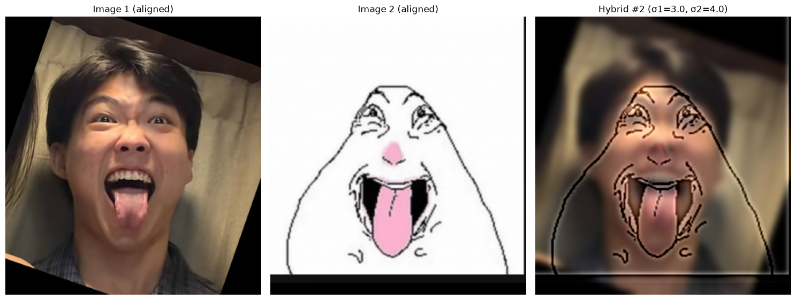
Derek and Nutmeg
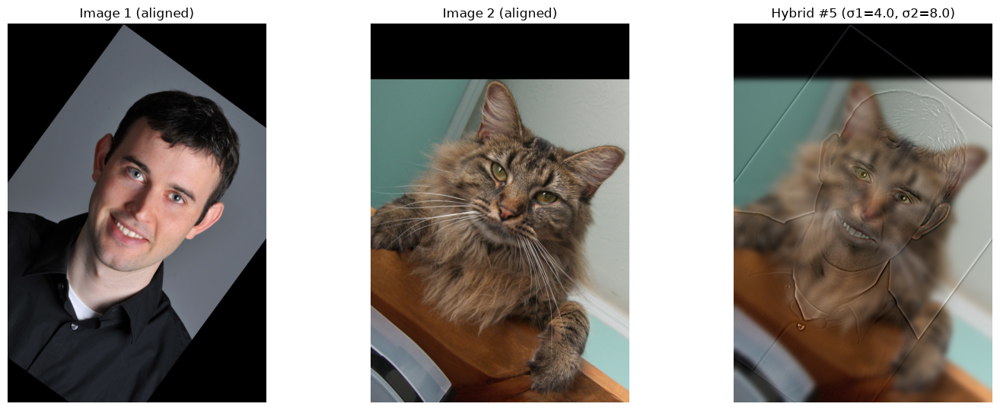
2.3 Gaussian and Laplacian stacks
A stack is a pyramid without downsampling: every level keeps the original image
size. Level k of the Gaussian stack is obtained by applying the same Gaussian
blur to level k−1. The Laplacian stack is formed by subtracting consecutive
Gaussian levels, producing band-pass components, with the final blurred Gaussian
image retained as the low-frequency residual. Summing all Laplacian levels
reconstructs the original image with negligible numerical error (max error
~10−16). No cv2.pyrDown or
skimage pyramid functions are used.
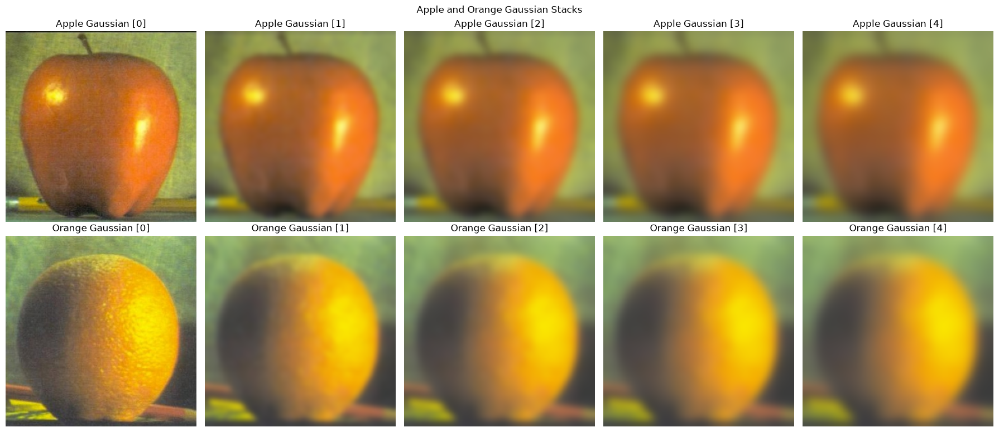
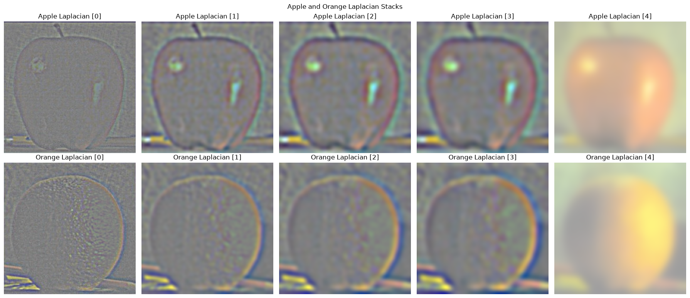

2.4 Multiresolution blending
For each level k, blend the two Laplacian levels with the k-th level of a Gaussian stack of the mask, then sum all levels: \(L_{blend}[k]=GM[k]\,L_1[k]+(1-GM[k])\,L_2[k]\). Low-frequency bands get a very soft transition and fine detail a sharp one, so no seam is visible.
def blend_multires(im1, im2, mask, num_levels, sigma_step):
l1 = laplacian_stack(gaussian_stack(im1, num_levels, sigma_step))
l2 = laplacian_stack(gaussian_stack(im2, num_levels, sigma_step))
gm = gaussian_stack(mask, num_levels, sigma_step) # mask is blurred per level
levels = [gm[k][..., None]*l1[k] + (1-gm[k][..., None])*l2[k] for k in range(num_levels)]
return sum(levels)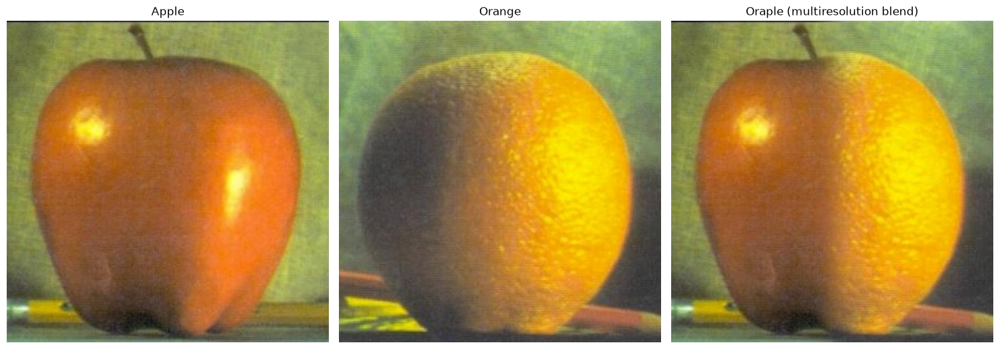
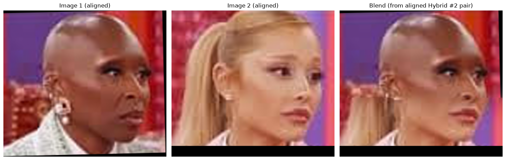
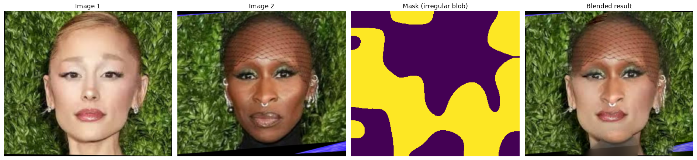
Process illustration (the irregular blend)
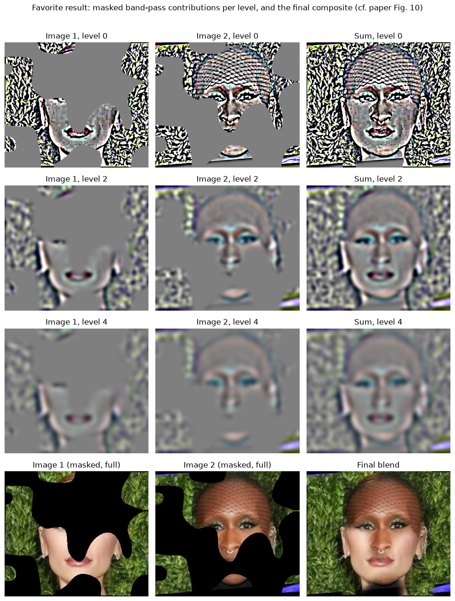